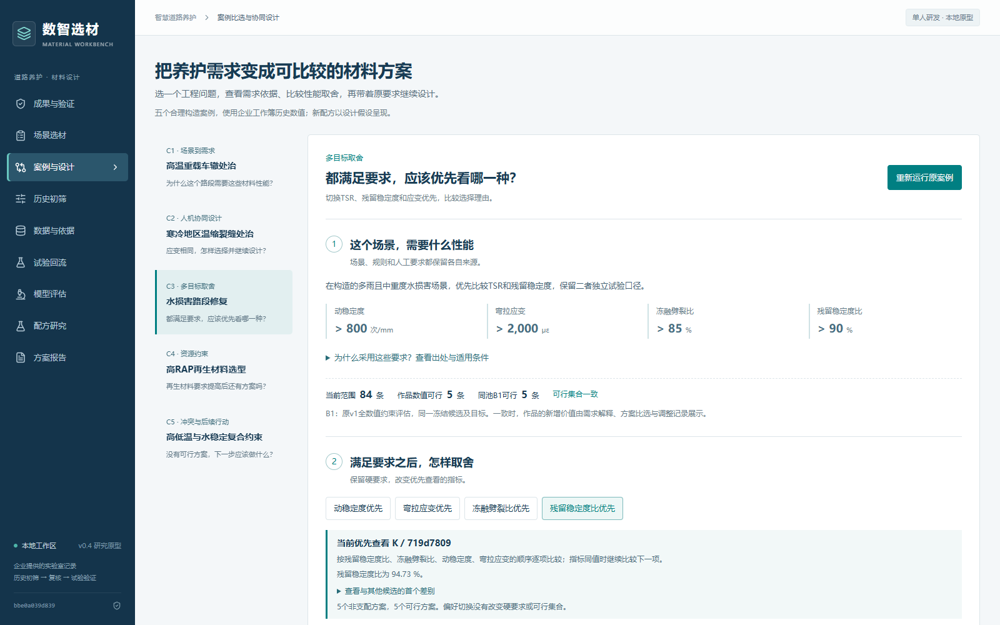

正式文档与交付附件
三项机制如何增加决策能力
场景解释与诊断
把规则、要求、来源与人工修改一起保留。没有推荐时，区分证据不足和明确候选范围内的冲突。
C1与C5
硬要求与偏好分离
所有硬要求先共同筛选；偏好只改变同一可行集合的比较顺序，显示原始数值与取舍理由。
C3 首位H变K，五项可行不变
保持需求继续设计
从准确父配方保存原需求、组成改动和设计意图。新草案具有独立身份，实测状态保持未知。
C2 油石比4.9%到5.0%
当前原型实际操作
约2分48秒，自动化执行的连续浏览器录屏，附字幕、无配音。页面结果来自实际操作；案例要求为合理构造，历史数值来自企业工作簿。
下载视频 · 字幕 · 操作记录 · 视频校验
五个典型案例与同池对照
五案共同使用84条AC-13目录并保留缺测。C5完整目录为证据不足；明确切换35条完整数值子池后有四组范围内冲突。基准与作品可行集合一致，新增价值由解释、比较与调整记录体现。

多种材料都合理时，工程师可以看清排序依据并保留自己的选择理由。
复现与检查
安装Python 3.12以上、Node.js 24和pnpm 11后，运行 scripts/setup.ps1，再运行 scripts/start-creative-demo.ps1。打开 http://127.0.0.1:8766/?view=design。首次安装需要网络，安装后核心操作本地运行。
项目启动说明 · 完整演示脚本与答辩问答 · 接口契约 · 字数与文档核对 · 匿名包核验
本轮交付为创意方案与软件概念验证。研究预测不用于硬要求通过判定；新配方不继承历史实测。官方报名状态由参赛者确认，比赛系统上传与最终提交仍由参赛者完成。